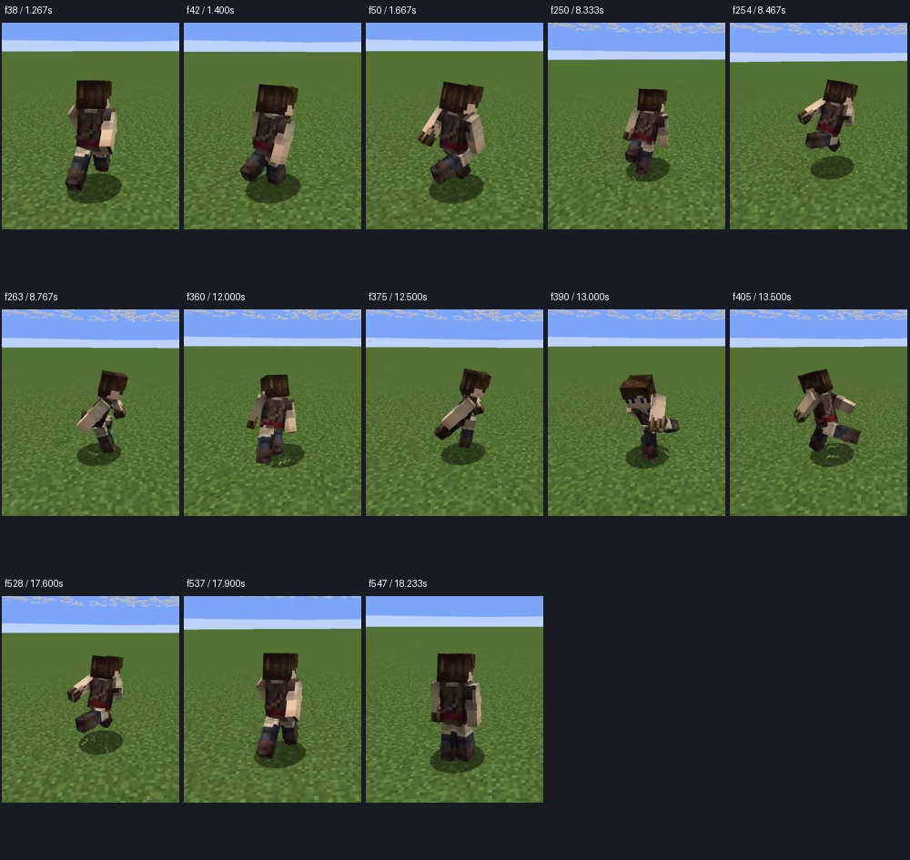
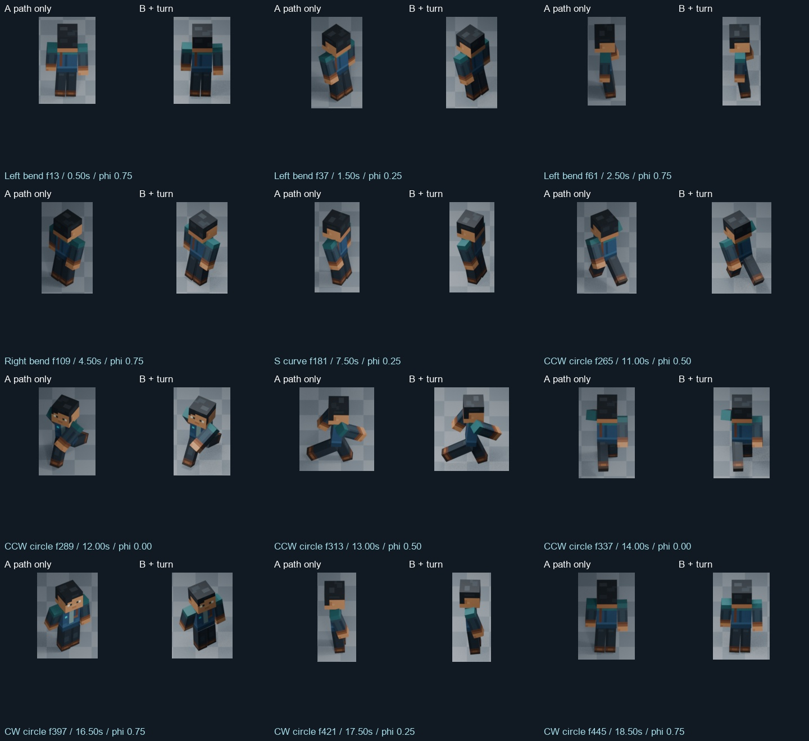
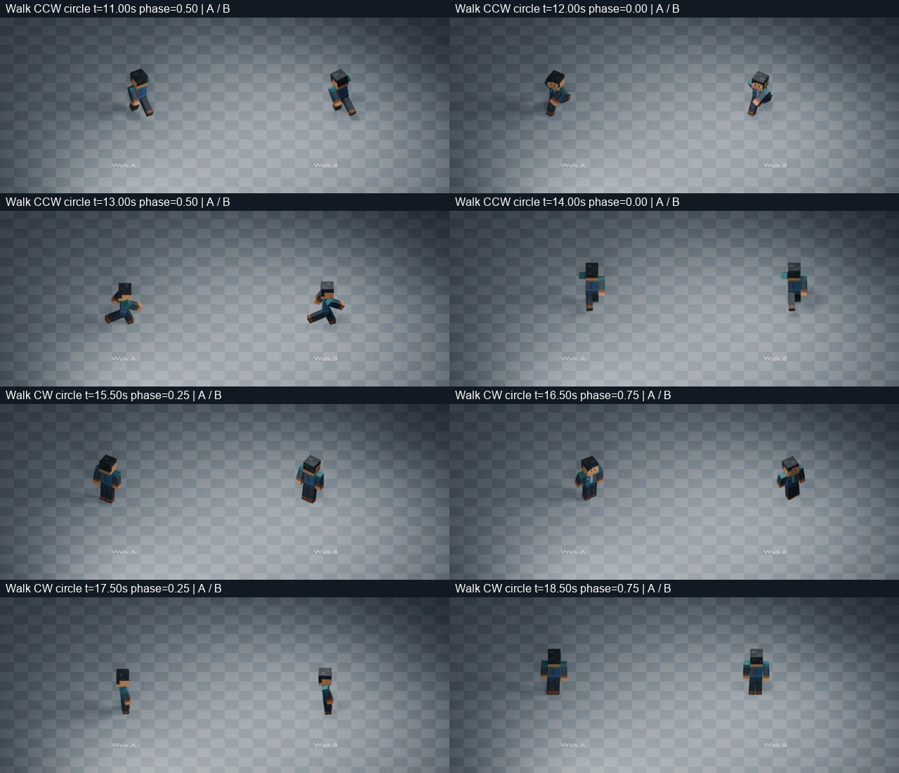
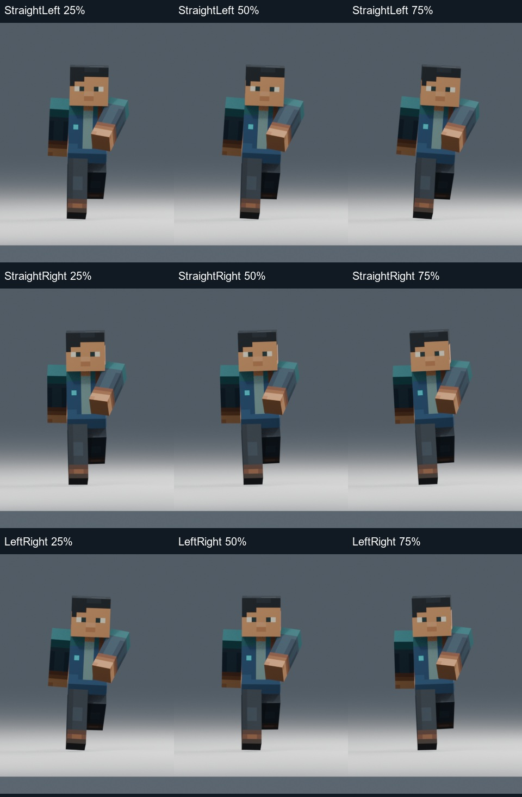
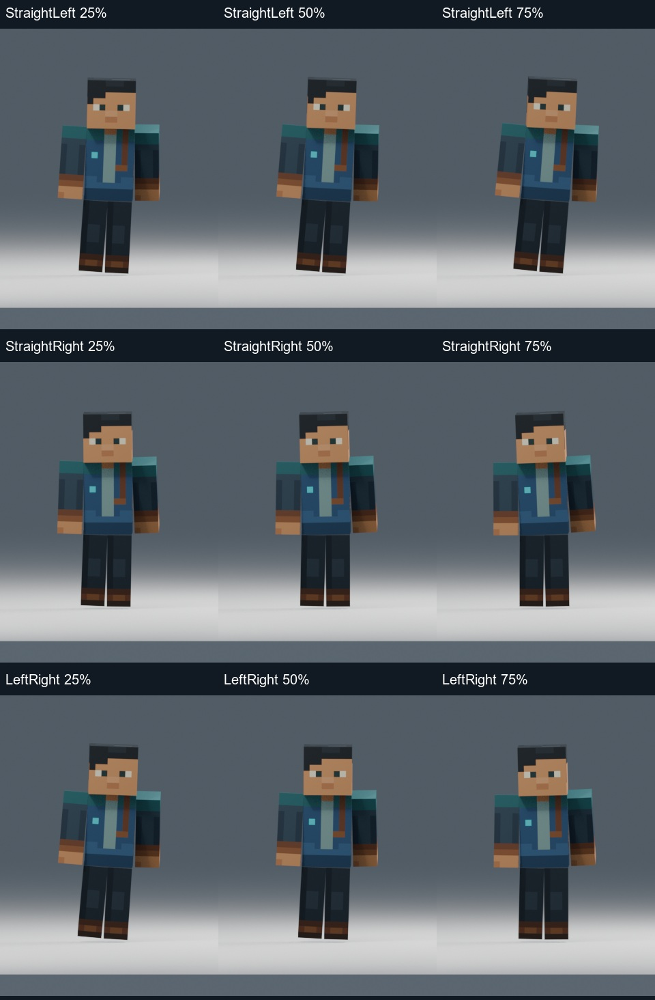
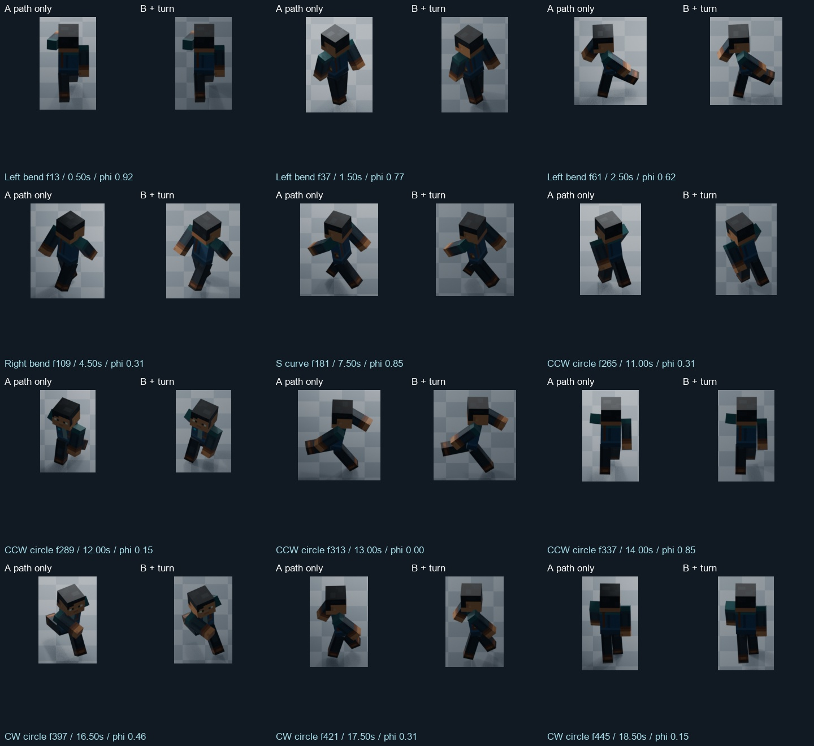
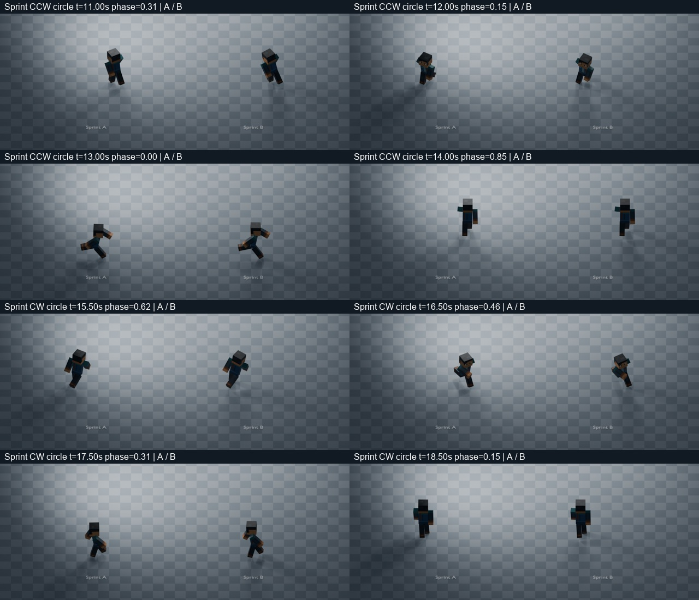
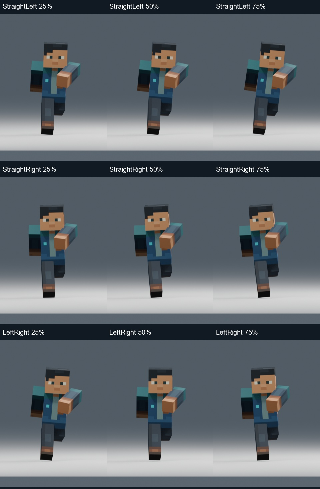
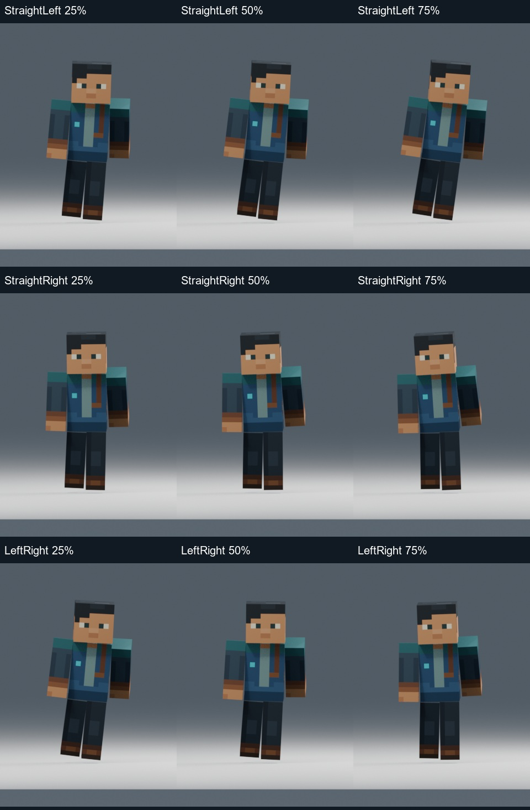

Four sustained turns rebased directly onto the approved straight V2 gaits. Walk: 0.666667 s. Sprint: 0.541667 s. All previews 24 FPS / 1.0×; no 1.60 multiplier. Technical checks are not artistic approval.
Full report · Action / midpoint checks · Path, entry and sliding checks
Review normal speed first. The assistant inspected ordered images and numerical traces; continuous real-time playback was not directly observed.
Original 30 FPS recording. Not time-synchronized to our test paths. Useful windows: 1.267–1.733s Walk entry; 8.333–8.833s Sprint entry; 14–15.9s circles; 17.6–18.233s recovery/deceleration.

Full-frame context. Source camera, inputs, rig topology and turn angles are not calibrated. The blend architecture is our implementation choice.

Detail crops share scale within each A/B pair; use the movie to judge travel.

Columns below: 25%, 50%, 75%. Rows: Straight→Left, Straight→Right, Left→Right.
Gait phase 0%

Gait phase 25%


Detail crops share scale within each A/B pair; use the movie to judge travel.

Columns below: 25%, 50%, 75%. Rows: Straight→Left, Straight→Right, Left→Right.
Gait phase 0%

Gait phase 25%

Remaining limits: visible sliding on the tight preview circles, a rigid straight recovery segment in side view, and limited head counter-bank at the cuboid neck seam. See the report for exact poses and measurements. No rig redesign or gameplay integration.